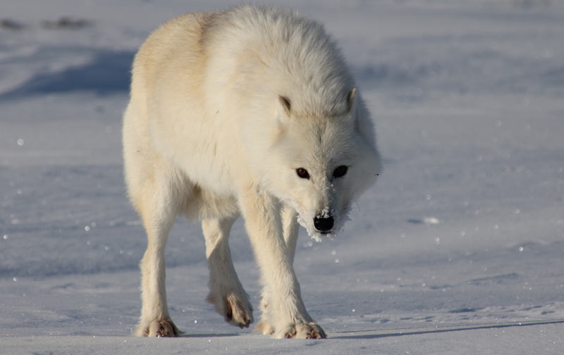

Полярный волк
Поля́рный волк (лат. Canis lupus tundrarum) — подвид волка. Обитает на всей территории Арктики и в тундре, за исключением морского льда и больших территорий, покрытых льдом. Полярный волк обитает на обширных пространствах полярных регионов, зимой в условиях полярной ночи. Чтобы выжить, волк приспособился есть любой корм, который только попадается. Он хорошо приспособлен к жизни в Арктике: может годами жить при минусовой температуре, месяцами не видеть солнечного света и неделями оставаться без пищи.
Полярный волк до сих пор обитает на всей территории, исторически доступной его виду. Причиной тому является слабая конкуренция с человеком. Длина без хвоста: 130—150 см. Высота в холке: 80—93 см. Масса: до 85 кг, самки меньше. Продолжительность жизни: около 7 лет. Родственные подвиды: европейский волк и японский волк.